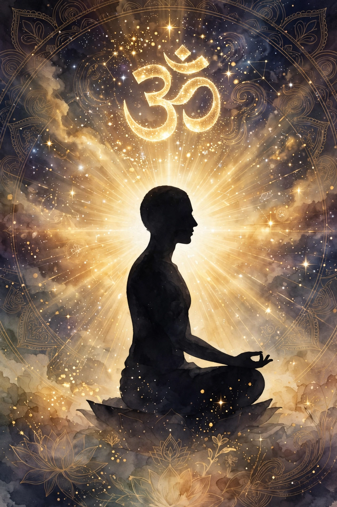

Brahman (Sanskrit: ब्रह्मन्) is a concept in Hinduism denoting the ultimate, unchanging reality — the supreme cosmic principle underlying all existence. It is to be distinguished from Brahmā, the creator god, and from brāhmaṇa, a member of the priestly varna.

The Upanishads describe Brahman as the source and ground of the universe, identified with Ātman, the inner self, in mahāvākyas such as tat tvam asi ("that thou art") and aham brahmāsmi ("I am Brahman").
Adi Shankara's Advaita holds Brahman is nirguna (without attributes) and the world of plurality is maya; Ramanuja's Vishishtadvaita teaches a qualified Brahman identified with Vishnu; Madhva's Dvaita maintains an eternal distinction between God and souls. These interpretations shaped Indian philosophy, theology and concepts of liberation (moksha).